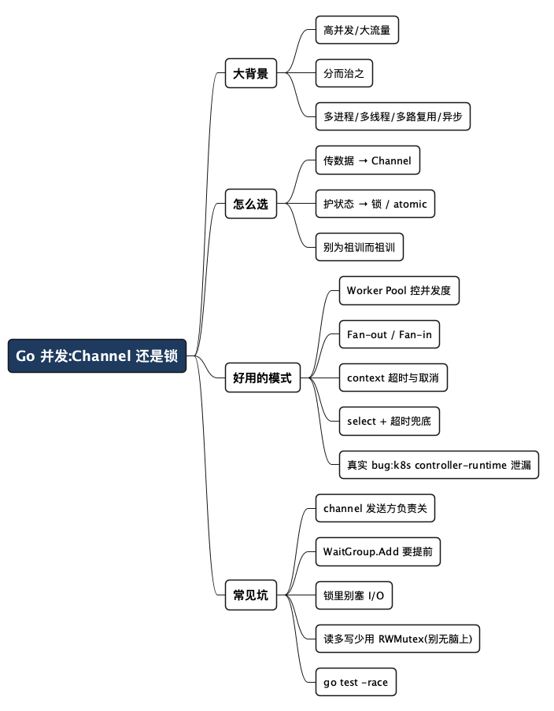

Channel 还是锁？聊聊 Go 里那些好用的并发模式
Posted on 二 07 7月 2026 in Tech
| Abstract | Channel 还是锁？Go 并发模式实战 |
|---|---|
| Authors | Walter Fan |
| Category | Tech |
| Version | v1.0 |
| Updated | 2026-07-07 |
| License | CC-BY-NC-ND 4.0 |
Channel 还是锁？聊聊 Go 里那些好用的并发模式
先说个场景。做后端的都熟：某个接口平时 QPS 几百，风平浪静，一到大促或者某个热点事件，流量瞬间翻几十倍。这时候你脑子里过的第一件事，永远是那句老话——分而治之。
一个人干不完的活，就拆给一群人干。落到工程上，就是我们熟悉的那几板斧：多进程（比如 Nginx 起一堆 worker）、多线程（Java 的线程池、Go 的 goroutine）、多路复用（一个线程盯一堆连接，epoll 那套）、异步（别傻等，回调或者 future 通知你）。手段就这么多，翻来覆去用。
但只要一"分",就绕不开一个头疼事:这群人同时去动同一份数据,怎么办? 这就是资源竞争。在 Go 里,这个问题会具体成一个每个人都纠结过的选择题——面对共享数据,我该用 Channel,还是老老实实加一把互斥锁(Mutex)?
这篇就想把这事说清楚:先给一个能记住的判断口诀,再把 Go 里几种真正扛用的并发模式一个个拆开,配上能直接跑的代码。看完你至少不会再对着 Channel 和 Mutex 两眼一抹黑。
先约定几个词,怕有读者不熟: - goroutine:Go 里的"轻量级线程",起一个只要几 KB 栈,一个进程里跑几十万个都不稀奇。可以理解成"很便宜的一个干活的人"。 - Channel:goroutine 之间传数据的"管道"。一头塞进去,另一头拿出来,天然带同步。像流水线上传递零件的传送带。 - Mutex(互斥锁):同一时刻只让一个 goroutine 进"临界区"动共享数据的锁。像公共厕所的门闩,进去了就锁上,别人得等。 - 数据竞争(Data Race):多个 goroutine 同时读写同一份内存,且至少有一个在写,结果不可预测。Go 自带的
-race检测器(go test -race)能在程序跑到竞争时报警。
一、那句被神化、又被误读的口诀
Go 官方有句名言,几乎是并发编程的"祖训":
Don't communicate by sharing memory; share memory by communicating. 不要通过共享内存来通信,而要通过通信来共享内存。
这话很漂亮,却常被念歪成:"Go 推荐 Channel,那锁就是落后的、要避免的。" 于是什么场景都硬套 Channel,把一个简单计数器写成一坨绕来绕去的管道。
这是典型的"把手段当目的"。祖训的本意其实是:当问题本质是"数据要在不同单元之间流动、交接"时,Channel 表达最自然;当问题本质是"保护一小块共享状态别被同时改坏"时,一把锁反而最直接。 Go 团队自己也在官方 Wiki 里说过,这不是铁律,该用锁就用锁——sync(Mutex、RWMutex)和 sync/atomic 一直在标准库里,不是历史包袱,而是本就有不可替代的场合。
所以别纠结"哪个更高级"了。它俩不是竞品,是分工。
二、一张表 + 一句口诀:到底怎么选
我自己的判断,浓缩成一句话:
传递数据的所有权,用 Channel;保护共享的状态,用锁。
再展开成一张对照表,方便你对号入座:
| 维度 | 更适合用 Channel | 更适合用 Mutex / atomic |
|---|---|---|
| 问题本质 | 数据要"传递、交接、流动" | 数据要"就地保护,别改坏" |
| 典型场景 | 生产者-消费者、任务分发、流水线、事件通知 | 计数器、缓存 map、共享配置、状态标志位 |
| 临界区大小 | 一段处理逻辑,数据要转手给别人 | 一两行,读写一个字段就完事 |
| 性能 | 有调度和拷贝开销,不适合超高频小操作 | 极轻量,尤其 atomic 几乎零成本 |
| 心智负担 | 结构清晰但容易多起 goroutine、忘关 channel | 简单直接,但容易忘解锁、死锁 |
| 一句话 | "把活儿和数据一起交出去" | "我就锁一下,改完马上放" |
打个生活里的比方。Channel 像是外卖流水线:接单的、备菜的、打包的、送餐的,各管一段,订单(数据)顺着传送带往下走,谁也不用去抢别人手里的东西。Mutex 像是公司里那台唯一的彩色打印机:大家都要用,但同一时刻只能一个人操作,你得先占着,打完赶紧让给下一个。
你看,这两个场景硬要互换就很别扭:让四个厨师抢一口锅(该用流水线的地方用了锁),或者给一台打印机修一条传送带(该用锁的地方用了 channel),都是自找麻烦。
三、先看反面教材:什么时候老老实实用锁
我见过太多人,一上来就想秀 Channel。最典型的翻车,是拿 Channel 去实现一个"并发安全的计数器"。
先看该用锁的正确写法,简单到无聊——这恰恰是它的优点:
// 一个并发安全的计数器:用锁,清爽
type Counter struct {
mu sync.Mutex
count int64
}
func (c *Counter) Inc() {
c.mu.Lock()
c.count++
c.mu.Unlock()
}
func (c *Counter) Value() int64 {
c.mu.Lock()
defer c.mu.Unlock()
return c.count
}
临界区就 c.count++ 一行,锁的范围小得不能再小。如果嫌 Mutex 都重,这种纯计数场景直接上 atomic 更快:
type Counter struct {
count int64
}
func (c *Counter) Inc() { atomic.AddInt64(&c.count, 1) }
func (c *Counter) Value() int64 { return atomic.LoadInt64(&c.count) }
那硬用 Channel 呢?得起一个专门的 goroutine 守着计数,所有加减和读取都通过 channel 发指令进去——代码量翻几倍,每次加一都过一遍调度器,更慢、更绕、还更容易死锁。这就是为祖训而祖训。
一句话记住:临界区就一两行、只是保护一个字段,别犹豫,上锁。
四、Go 里真正扛用的几种并发模式
选型讲完,下面几种模式在生产里反复出现,吃透了大部分并发需求都能拼出来。
4.1 Worker Pool(工作池):控制并发度的老实人
我用得最多的模式。核心诉求一句话:任务很多,但我不想无脑起几万个 goroutine 把下游(数据库、第三方 API)打爆,得控制同时干活的人数。
思路是:开固定数量的 worker,从同一个任务 channel 里抢活,干完把结果丢到结果 channel。
func workerPool(jobs <-chan int, results chan<- int, workerNum int) {
var wg sync.WaitGroup
for i := 0; i < workerNum; i++ {
wg.Add(1)
go func() {
defer wg.Done()
for job := range jobs { // channel 关了,range 自动退出
results <- job * job // 假装这是耗时的处理
}
}()
}
// 单独一个 goroutine 等所有 worker 干完,再关结果 channel
go func() {
wg.Wait()
close(results)
}()
}
func main() {
jobs := make(chan int, 100)
results := make(chan int, 100)
workerPool(jobs, results, 4) // 只用 4 个 worker
for i := 1; i <= 10; i++ {
jobs <- i
}
close(jobs) // 活派完了,关掉,worker 们 range 结束后自然收工
for r := range results {
fmt.Println(r)
}
}
Channel 和 Mutex 各司其职的味道就出来了:任务分发、结果回收是"数据流动",用 channel;sync.WaitGroup 本质是个带锁的计数器,负责"等所有人干完"这个状态同步。两者搭配,不是二选一。
一个坑:workerNum 别拍脑袋,它应该由下游能承受的并发上限决定,而不是你机器几个核——32 核不代表数据库连接池能扛 32 个并发写。
4.2 Fan-out / Fan-in(扇出/扇入):把一件大事拆成小事再合并
名字唬人,其实就是"分而治之"的 Channel 版:
- Fan-out(扇出):把一个 channel 的活儿分给多个 goroutine 并行处理。
- Fan-in(扇入):把多个 goroutine 的结果汇总回一个 channel。
Worker Pool 就是它的一个特例。适合"一批数据,每条都要做同样的重活儿(比如各自去调一个慢接口)、彼此不依赖"的场景:扇出去并行跑,再扇回来统一收。
关键点是 Fan-in 的合并:
func fanIn(channels ...<-chan int) <-chan int {
out := make(chan int)
var wg sync.WaitGroup
for _, ch := range channels {
wg.Add(1)
go func(c <-chan int) {
defer wg.Done()
for v := range c {
out <- v
}
}(ch)
}
go func() {
wg.Wait()
close(out) // 所有源都干完了,才关合并出口
}()
return out
}
4.3 用 context 做超时与取消:并发里最容易被忽略的一环
前面都在讲"怎么把活干起来",但更要命的问题是:活干到一半,不想干了怎么办? 客户端断开、超时、上游取消——你得让一堆正在跑的 goroutine 及时收手,别空转泄漏。
context 就是干这个的,像发给所有下属的一个"随时可能拉响的收工哨":
func worker(ctx context.Context, id int) {
for {
select {
case <-ctx.Done(): // 哨声响了,赶紧收工
fmt.Printf("worker %d 收到取消信号: %v\n", id, ctx.Err())
return
default:
// 干一小步活,然后回来再看看哨响没
time.Sleep(100 * time.Millisecond)
}
}
}
func main() {
ctx, cancel := context.WithTimeout(context.Background(), 300*time.Millisecond)
defer cancel()
for i := 0; i < 3; i++ {
go worker(ctx, i)
}
<-ctx.Done() // 主 goroutine 也等哨声
time.Sleep(50 * time.Millisecond) // 给 worker 一点收尾时间
}
我的经验:会起 goroutine、会做 I/O、会等待的函数,第一个参数就该是 ctx context.Context。 这是防止 goroutine 泄漏最省心的护栏。很多"内存慢慢涨、goroutine 数只增不减"的线上诡异问题,根子就在起了 goroutine 却没给它留取消的退路。
4.4 select + 超时:别让任何一个 channel 操作无限期傻等
select 是 Go 并发的瑞士军刀:它能同时盯着多个 channel,哪个先就绪就走哪个。配上 time.After,就能给任何阻塞操作加个"闹钟":
select {
case res := <-resultCh:
fmt.Println("拿到结果:", res)
case <-time.After(2 * time.Second):
fmt.Println("等太久了,超时!") // 兜底,别死等
case <-ctx.Done():
fmt.Println("被取消了")
}
一句话:只要有 channel 的读写可能阻塞,就想想"万一对面永远不来,我要等到什么时候",然后用 select 加个超时或取消分支兜底。
4.5 一个真实的开源 Bug:Kubernetes controller-runtime 的 goroutine 泄漏
别以为这种坑只有新手会踩。2025 年,Kubernetes 官方 SIG 的 controller-runtime——几乎所有 K8s Operator/Controller 都依赖的核心库——就修过一个教科书式的 goroutine 泄漏(issue #3218、修复 PR #3247),成因恰好把 context 超时和 channel 阻塞串到了一起:
- manager 关停(shutdown)时有个"优雅退出"超时
gracefulShutdownTimeout; - 超时一到,manager 不再等 runnable,顺手把负责从
errChan排空错误的那个 goroutine 也停了; - 偏偏这时某个"慢半拍"的 runnable 才失败,照常往共享的
errChan发一个 error; - 结果接收方已经没了,
errChan <- err永远阻塞,goroutine 退不出来,泄漏了。
作者复现时,goleak 打出的泄漏栈状态清清楚楚写着 chan send——就卡在往 channel 发送那一行。修复很干净,把会阻塞的 r.errChan <- err 改成带取消分支的 select:
select {
case r.errChan <- err:
// 正常:错误成功送出
case <-r.ctx.Done():
// 已在关停,没人接收,记个日志丢掉,让 goroutine 干净退出
}
review 里还有个小插曲:一开始有人建议直接用 default 兜底,作者指出那样在正常运行时只要 errChan 偶尔占满就会误丢错误。最终定为"正常时坚持发送、只有 context 取消才走丢弃分支",既堵泄漏又不误伤——连一个 select 分支怎么写,背后都是权衡。
这个例子想说的是:"起了 goroutine、往 channel 发东西,却忘了留取消的退路"——这种坑连 Kubernetes 都会踩,直到 2025 年还在修。 它不挑人,只挑你有没有"起了 goroutine 就先想好它怎么退"的习惯。
五、几个把人坑惨的细节
模式会用了,还有几个反复咬人的坑,提前打个预防针:
- 关 channel 的责任在"发送方",不在接收方。 而且只能关一次,关两次直接 panic。惯例是:谁发,谁负责关;接收方只管
range或<-。 sync.WaitGroup的Add要在起 goroutine 之前调。 别在 goroutine 内部才Add,那可能Wait已经先跑过去了,计数根本没加上。defer mu.Unlock()是好习惯,但小心锁的粒度。 如果临界区里夹了一个慢 I/O(比如网络请求),整个锁期间别人全在门口排队,并发直接变串行。锁只护数据,别把 I/O 也圈进去。- 读多写少用
sync.RWMutex,但别看到"读"就无脑上。 它只在读远多于写、且读临界区有一定耗时时才划算——RWMutex 内部要维护读者计数和写者标志,比 Mutex 更重。像前面那个计数器,临界区就一行、写还频繁,上 RWMutex 反而是净亏损:纯计数用atomic,带复合判断(如if count>0 then count--)用普通Mutex,都更快。 - 别忘了
-race。 CI 里养成go test -race的习惯,数据竞争这种"平时不出事、一上量就诡异"的 bug,靠它能提前抓出一大半。
六、最后一句
回到开头那个选择题。Channel 和 Mutex 不是"新 vs 旧""高级 vs 低级"的对立,而是两种表达方式:一个擅长"数据在流动",一个擅长"状态被保护"。 别急着站队,先看清手头的问题属于哪一类。
分而治之只是把大问题拆小,真正的手艺是拆完之后,让这些小单元既能各干各的、又能在该同步时稳稳握手。工具就那么几样,难的是每次都用对地方。
传数据用 Channel,护状态用锁,该超时就超时,起了 goroutine 就想好它怎么退。
行动清单
写并发代码前,拿这几条对一遍:
- 先分类:这个共享数据,是要"传递交接"还是"就地保护"?—— 决定 Channel 还是锁。
- 控并发度:会起大量 goroutine 吗?下游扛得住吗?—— 上 Worker Pool,别裸奔。
- 留退路:每个会阻塞/会 I/O 的函数,第一个参数带上
ctx,想清楚它怎么被取消。 - 加闹钟:每个可能阻塞的 channel 操作,配
select+ 超时/取消分支兜底。 - 收好尾:channel 由发送方关且只关一次;
WaitGroup.Add在起 goroutine 之前调。 - 锁要瘦:临界区里别塞 I/O;读多写少换
RWMutex。 - 抓竞争:CI 里跑
go test -race,别等上线才发现。
你在项目里踩过哪个并发的坑?是 goroutine 泄漏,还是 channel 关早了 panic,还是死锁?欢迎到我的个人网站留言聊聊。
扩展阅读
书:
- 《Concurrency in Go》(Katherine Cox-Buday,O'Reilly)—— 首推,专讲 Go 并发,CSP、Channel、
sync包、pipeline、fan-out/fan-in、context 取消都讲得系统又落地,本文提到的模式书里都有更完整的推导。有中译本《Go 语言并发之道》。 - 《The Go Programming Language》(Donovan & Kernighan)—— Go 圣经,第 8、9 章专讲 goroutine、channel 与共享变量同步,是理解"祖训"由来的一手材料。
- 《The Art of Multiprocessor Programming》(Herlihy & Shavit)—— 跳出语言看并发,锁、无锁、内存模型的理论根基都在这儿。
一手查证资料:
- controller-runtime issue #3218 / PR #3247 —— 本文 4.5 节那个真实泄漏 bug 的原始记录。
- Uber Engineering —— LeakProf(2022)—— 大厂怎么在生产环境批量抓 goroutine 泄漏。
go.uber.org/goleak—— 单元测试里检测 goroutine 泄漏的工具,defer goleak.VerifyNone(t)一行就能用。
全文思维导图
@startmindmap
<style>
mindmapDiagram {
node {
BackgroundColor #F8F9FA
RoundCorner 10
Padding 10
FontSize 13
}
:depth(0) {
BackgroundColor #1E3A5F
FontColor white
FontSize 18
FontStyle bold
}
:depth(1) {
FontSize 15
FontStyle bold
}
:depth(2) {
FontSize 13
}
}
</style>
* Go 并发:Channel 还是锁
** 大背景
*** 高并发/大流量
*** 分而治之
*** 多进程/多线程/多路复用/异步
** 怎么选
*** 传数据 → Channel
*** 护状态 → 锁 / atomic
*** 别为祖训而祖训
** 好用的模式
*** Worker Pool 控并发度
*** Fan-out / Fan-in
*** context 超时与取消
*** select + 超时兜底
*** 真实 bug:k8s controller-runtime 泄漏
** 常见坑
*** channel 发送方负责关
*** WaitGroup.Add 要提前
*** 锁里别塞 I/O
*** 读多写少用 RWMutex
*** go test -race
@endmindmap

本作品采用知识共享署名-非商业性使用-禁止演绎 4.0 国际许可协议进行许可。 欢迎在我的个人网站 https://www.fanyamin.com 访问原文并评论。